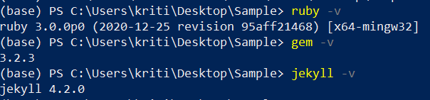
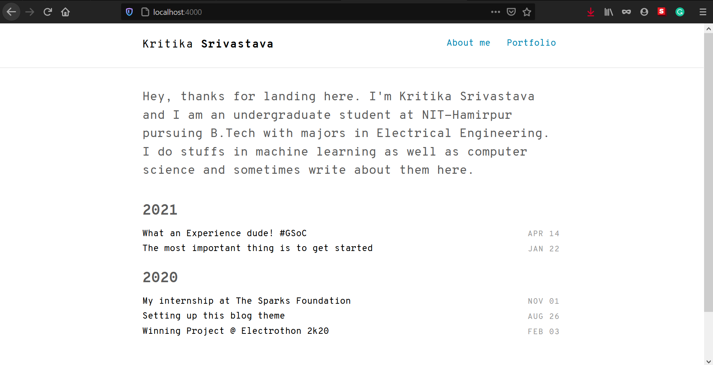

Wondering how I created this blog?
Wait !
Before that, tell me, do you know what a blog is?
If you don’t, then you’ve come to the right place. A blog is more of a personal diary that people shared online. In this online journal, you can talk about your daily life or share about things that you do.
In this blog I shall walk you through the details of how I created this blog site.

The blog theme that I used is a Jekyll theme named Thinkspace.
Jekyll is a static site generator that you can use to create simple sites or blogs and Github pages is a static site hosting service. By using Jekyll with Github pages, you can quite easily put together your first blog/website for free.
There are some requirements for jekyll. Did I forget to mention that Jekyll is a Ruby gem? Well now you know.
Requirements
- Ruby
- Gem
On a Linux machine you can directly install both the requirements using CLI(Command line Interface) but for windows we will have to make certain arrangements for jekyll.To setup jekyll on windows you need to have windows package manager chocolatey installed and from this you can install ruby and gem.
Follow the steps in this blog to setup your work environment.Make sure to add chocolatey to path.
Now lets move on to creating our blog website using this theme.
Step-1 : Install Jekyll on your machine
- Open windows powershell.
- Before installing jekyll, we need to ensure the correct version of ruby is installed on the machine because jekyll runs on ruby. (Ruby version must be 2.1 or higher)
To check the version of ruby installed, type
ruby -v
- Now we need to check if the right version of gem is installed. To check the version of gem, type
gem -v
- Now, you need to go ahead and install jekyll.
To install jekyll, type
gem install jekyll bundler
This should fetch all the jekyll files needed and install them.
- Once the installation is done, check the version of jekyll installed by typing
jekyll -v
The output should be something like the one given below. The version need not be same. Make sure that you install the latest version.

Step 2: Create a Jekyll Blog on your local machine
Name of the blog I’m going to create is Thinkspace and I’ll be demonstrating the following example with this name. Remember to change the name of your blog accordingly.
Lets change the directory using the below code.
cd <path-to-directory-for-blog>
Now to create a jekyll blog on local machine, open terminal and type
jekyll new thinkspace
This will create a new folder on your computer for the blog. The folder’s name will be thinkspace (or the name you had entered).
Now just search for “thinkspace” to locate the folder on your computer.
Note : For the upcoming steps if the preceeding commands do nto work then clone this repository and make changes to this repository instead.
- In order to edit the contents of this blog and publish it, I’m going to be using Visual Studio Code. This piece of software lets you use the terminal from the window, making it super easy to view all the files and edit it accordingly.
Before we proceed towards figuring out how to edit the contents, let’s first publish the blog locally and see how it appears.
To do this, go to the terminal within VSC and type
bundle exec jekyll serve
If you run into error then clone this repository. and perform the steps mentioned :
- run
bundle install
bundle exec jekyll serve
If there is still error then check the gemfile in your repository and resolve the version conflicts by installing the mentioned versions in gemfile.
Now make edits to this repository instead and don’t forget to delete .gitignore file of this repository before uploading code to github because this .gitignore cooresponds to the repository you cloned and not the .gitignore file of your github repository.
Now, your site should be up and running on your local host: http://127.0.0.1:4000/ Meaning, if you go to this link, you’ll be able to see your blog somewhat like the one mentioned below.

Let’s now checkout the different folders that jekyll has created and understand how to edit them.
_posts: This is the folder that has all your blog posts. Each of these posts should be a markdown file and should be included within this folder for it to be listed in your blog._site: This files in this folder are responsible for compiling your blog. You basically have different blog posts, images, pages lying in different folders. The files in _sites folder bring them together and publish it as a website._config.yml: This file contains your site’s variables such as title, your usernames, urls etc.about.md: This is just a markdown file that contains data to be published in your about sectiongemfile: gemfile contains all the dependencies for this site. Meaning you are using jekyll. And within jekyll, you are using it’s default theme called ‘Minima’. The gem file specifies such info.
To quickly make your blog ‘yours’ by adding info relevant to you, edit the following:
- Title, description and other details in _config.yml
- Content in about.md file
- Content in the blog post within _posts folder. You may also copy paste that file and edit its content to create your second blog post.
Now your blog website is ready to be published using github pages!
For more details on how to publish site using github pages check this out.
Happy Coding ;-)